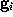

SOLVATE creates the solute/solvent/ion simulation system in a number of steps. For optimal use of SOLVATE, knowledge of these steps is advantageous. As an example, the accompanying pictures show the generation of a solvent shell around a protein complex (immunoglobulin/lysozyme), 6Å thick, including ions. Starting from the coordinate- and structure-file of the complex ( glob.pdb and glob.psf), the shell was created with the command
solvate -t 6.0 -n 8 -ion glob globsol
yielding the file globsol.pdb.
SOLVATE reads the atom
coordinates and atom names
of the solute (Figure) from the pdb-file specified on the
command line.
From the atom names SOLVATE derives approximate
van der Waals parameters (radii and interaction
strengths ). If ions are to be placed (as in
our case), SOLVATE must
know about the electrostatics of the solute, which it derives
from the atomic partial charges read from the psf-file.
If no pdb-file is given, or if the pdb-file contains no atoms, one `dummy-atom' (with zero radius) is created at the cartesian origin as the `solute'. By that means a `pure' spherical water droplet can be created.
On the basis of the atomic positions of the solute
the smallest convex volume containing
the solute is computed and represented by a regular
set of `grid points' with  Å spacing.
To that end, in a first step center and radius of the solute's
`bounding sphere',
i.e., the smallest sphere containing the solute,
are computed. This bounding sphere is then filled with grid points
(see Figure; the solute seems not to completely fill the bounding sphere;
however it does, since
the sphere and the solute are three-dimensional objects).
Å spacing.
To that end, in a first step center and radius of the solute's
`bounding sphere',
i.e., the smallest sphere containing the solute,
are computed. This bounding sphere is then filled with grid points
(see Figure; the solute seems not to completely fill the bounding sphere;
however it does, since
the sphere and the solute are three-dimensional objects).
(b) Slicing
From that spherical volume the minimal convex volume is
subsequently constructed
by `slicing away' parts of the spherical volume in many different
directions by a `knife' (solid lines) that just touches the solute.
To vary the flatness of the surface of the minimal convex volume, a
`bended knife' (dashed lines) can be used by specifying a
maximum boundary curvature radius. The grid points
 which
survive the slicing procedure span the desired
minimal convex volume.
An ideal solute-adapted boundary would be given by a surface enclosing the minimal convex volume at a given constant distance d.
To a good approximation, such an ideal surface can be defined as an
iso-surface of a density function ,
by requiring with suitably
chosen  .
The figure shows a cut through this density function, ,
for our example solute.
.
The figure shows a cut through this density function, ,
for our example solute.
This boundary certainly fulfills the geometric requirements,
but its computational treatment is highly inefficient, since the
number  of exponentials to be computed in Eq. 1
(the number of grid points spanning the convex volume) is
typically of the order .
of exponentials to be computed in Eq. 1
(the number of grid points spanning the convex volume) is
typically of the order .
Note, however, that the density function defined above
is quite smooth, since the distance between
grid points ( Å) is much smaller than the width of the (univariate)
gaussians used (typically Å).
Therefore,
Å) is much smaller than the width of the (univariate)
gaussians used (typically Å).
Therefore,  can be approximated to sufficient accuracy by a sum
of much fewer () multivariate gaussians,
can be approximated to sufficient accuracy by a sum
of much fewer () multivariate gaussians,
where are the heights and
are the centers of the
 gaussians. The matrices
specify the shapes of the gaussians; their overall
extension in space can be varied
by a scale-factor s. Experience shows that usually very few (less than 10)
gaussians are sufficient, so that the computational cost for the
necessary distance
computations in MD simulations becomes negligible. To find optimal
heights, centers and shape matrices, SOLVATE uses a recently proposed
maximum likelihood density estimation method [8].
After having computed these parameters, they are written to the file
gaussians.lis.
gaussians. The matrices
specify the shapes of the gaussians; their overall
extension in space can be varied
by a scale-factor s. Experience shows that usually very few (less than 10)
gaussians are sufficient, so that the computational cost for the
necessary distance
computations in MD simulations becomes negligible. To find optimal
heights, centers and shape matrices, SOLVATE uses a recently proposed
maximum likelihood density estimation method [8].
After having computed these parameters, they are written to the file
gaussians.lis.
The Figure shows a set of dots, the density of which obeys the density function f.
SOLVATE uses a fixed isosurface level  (where is the average height of the gaussians).
Obviously, the distance of the solvent surface from
the solute, as defined by , is not known at this point.
To ensure that the smallest distance equals a given distance d,
SOLVATE iteratively varies the scale-factor s (i.e.,
the widths of the gaussians) until the
minimum distance between solute and solvent surface approaches
the desired value.
(where is the average height of the gaussians).
Obviously, the distance of the solvent surface from
the solute, as defined by , is not known at this point.
To ensure that the smallest distance equals a given distance d,
SOLVATE iteratively varies the scale-factor s (i.e.,
the widths of the gaussians) until the
minimum distance between solute and solvent surface approaches
the desired value.
All parameters necessary to
define  (
( ,
,
 ,
and )
are now written to the file boundary.lis for later use by an
MD-program, e.g., by
EGO.
,
and )
are now written to the file boundary.lis for later use by an
MD-program, e.g., by
EGO.
In a similar way as in STEP 2, the
boundary surface  is filled with
a number of grid points
is filled with
a number of grid points  (see figure). For every grid point
the minimum distance to the solute, ,
is determined and stored; the grid points are then sorted by
increasing minimum distance,
which will be useful to efficiently place the solute (water) molecules.
Those grid points which are located very close to the boundary
can be used to visualize that boundary and are therefore written to the file
surface_stat.lis if desired.
(see figure). For every grid point
the minimum distance to the solute, ,
is determined and stored; the grid points are then sorted by
increasing minimum distance,
which will be useful to efficiently place the solute (water) molecules.
Those grid points which are located very close to the boundary
can be used to visualize that boundary and are therefore written to the file
surface_stat.lis if desired.
As will be described in Sec. 6, the distance
of a given point
of the solvent volume to the boundary can be efficiently
estimated from (shown in the figure, colour-coded)
to a sufficient accuracy (Å).
To check the accuracy of
the distance computation, for each grid point
the efficiently
estimated distance is compared with the accurate distance,
and, if the -s option is set, the resulting error
statistics is appended to the file surface_stat.lis.
In our example, this statistics reads
[MINIMUM INVALID DENSITY]
0.935194
[DISTANCE ERROR STATISTICS (ABS. ERR / DENSITY / DISTANCE)]
0.01 0.401408 3.245818
0.02 0.451980 4.120950
0.05 0.538697 5.512379
0.10 0.631438 6.651468
0.20 0.753683 8.271388
0.50 0.985918 10.718131
1.00 100000000000000000000.000000 62.000000
which means that all distances smaller than 3.245818 Å (for these, f<0.401408), are computed within an error of 0.01 Å; all distances smaller than 4.120950 Å (f<0.451980) within an error of 0.02 Å and so on. No error of 1.0 Å or larger occurred. Distance computations are valid for all locations within the boundary where f is below the minimum invalid density (0.935194).
Using the sorted grid points  , and starting at points
closest to the solute, the solvent volume is
filled with water molecules, one molecule after the other.
In this process, for each grid point
, and starting at points
closest to the solute, the solvent volume is
filled with water molecules, one molecule after the other.
In this process, for each grid point  SOLVATE
checks whether the distances of
SOLVATE
checks whether the distances of  to all
solute atoms as well as to all water molecules already placed
is larger or equal to the appropriate van der Waals distance.
If not, the respective grid point is discarded; if yes,
a water molecule is placed at location
to all
solute atoms as well as to all water molecules already placed
is larger or equal to the appropriate van der Waals distance.
If not, the respective grid point is discarded; if yes,
a water molecule is placed at location  and, by steepest
descent, subsequently moved to a nearby energetically favorable position
(only van der Waals energies are considered here).
By this procedure, water molecules close to the solute are placed
first (drawn in blue in the figure), followed by water molecules further apart
(the ones placed last are drawn in red).
and, by steepest
descent, subsequently moved to a nearby energetically favorable position
(only van der Waals energies are considered here).
By this procedure, water molecules close to the solute are placed
first (drawn in blue in the figure), followed by water molecules further apart
(the ones placed last are drawn in red).
Water molecules closest to the solute are likely ones placed
in `caves' inside the solute (such caves exist, e.g., inside
proteins). To distinguish such `buried' water molecules (drawn as
balls in the figure) from
bulk water (small angles), all water molecules are grouped according to their
connectivity. Typically a few dozen `groups' consisting of just
one isolated molecule, of a pair or a triplet of molecules
(depending on the size of the `cave') will be identified as well
as the bulk group containing all the other water molecules.
The groups are consecutively numbered, starting with for
the bulk group.
Note that solvate places buried water molecules only according to steric criteria, not according to energetic criteria. If buried water molecules found by solvate are to be included within a subsequent MD-simulations, it has to be checked whether their free energy is low enough so that they are likely to really be there. A good estimate is provided by the program Dowser (http://femto.med.unc.edu/Research/dowser.html or similar software.
Sodium (light blue) and chloride ions (green) are placed in the solvent volume
at isotonic (physiological) concentration (mol/l) obeying
the Debye-Hückel distribution, which depends on
the locations of charged atoms of the solute (red, blue): on average,
each charged atom at the surface of the
solute is surrounded by a `cloud' of socalled counter-ions. The
size of this cloud is given by the Debye-Hückel length ,
, where
e is the
elementary charge, is the dielectric constant,
is the Boltzmann constant,
and T=300K the temperature.
The density
(i=Na,Cl) of an ion cloud caused by a solute
atom with partial charge is a function of the
distance r from the charged atom, approaches the isotonic concentration
 for large
r, and is computed in linear approximation,
for large
r, and is computed in linear approximation,
with and
. Due to the linear approximation,
 may become negative, in which case it is set to zero.
The total ionic density is the determined from the linear superposition of
all the ion clouds around the charged solute atoms.
In a first step, all ions (the number of which is
determined from the charge
density integral over the solvent volume) are placed at random
according to that Debye-Hückel total ionic density.
may become negative, in which case it is set to zero.
The total ionic density is the determined from the linear superposition of
all the ion clouds around the charged solute atoms.
In a first step, all ions (the number of which is
determined from the charge
density integral over the solvent volume) are placed at random
according to that Debye-Hückel total ionic density.
Since the Debye-Hückel approximation is a mean field description, at this point ion-ion correlations are not yet described. To find ionic positions which obey also these higher order correlations, and to avoid artifacts due to the linear approximation, the ions are subsequently subjected to a large number (2,000,000) of Monte-Carlo moves, where the Coulomb field of the solute, and now also the inter-ionic Coulomb field is considered.
The current version of SOLVATE does not yet allow to use a salt concentration different from the isotonic concentration, neither is it possible to include ions other tan sodium and chloride or to set a temperature different from K.
Since up to now, the water molecules have been treated as simple van der Waals spheres (one per molecule) representing only the oxygen positions, two hydrogen atoms per water molecule have to be added. These are oriented at random; a realistic short range order of these dipoles can be created within a short MD run (10 picoseconds is long enough).
Finally, a pdb-file is written, containing the solute, the positions of the water molecules, and, if present, the positions of the ions.
In the pdb-file each group of water molecules is assigned a unique segment-identifier, starting with W100 for the innermost group, W101 for the second and so on. Bulk water is stored last.
If present, ions are appended at the end of the pdb-file; sodium ions first (atom name NA, `molecule' INA, segment-identifier NA), then the chloride ions (atom name CL, `molecule' ICL, segment-identifier CL)
Optionally, SOLVATE generates an X-PLOR-script to create a (psf-) structure file for the final solute/solvent-system. Appropriate topology-files and parameter-files to describe the water molecules from the X-PLOR distribution (e.g., toph19.sol and param19.sol) are required to generate a psf-file.
{kind=link}
{kind=link}
{kind=link}
{kind=link}
{kind=link}
{kind=link}
{kind=link}
{kind=link}